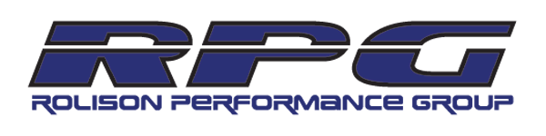

Michael Michoff is 15 years old and has been racing go-karts for 8 years. He is a California native and lives in Roseville, a suburb of Sacramento. His passion for racing runs deep and was passed down from his father. Michael started racing in 2007 when he was 7 years old, his talent for driving was evident and Cambrian quickly picked him up. Over the years he has won quite a few championships and has taken every opportunity to increase his driving ability. He is involved in a home-school program that allows him to travel and drive as much as possible. His ultimate goal is to be a professional driver.
Michael is currently racing for RPG and has been for almost a year. Under this team he competes in the larger events with the help of his tuner Harison and the rest of the RPG team. They have been invaluable in helping him grow his experience and get involved in racing at a higher level.
